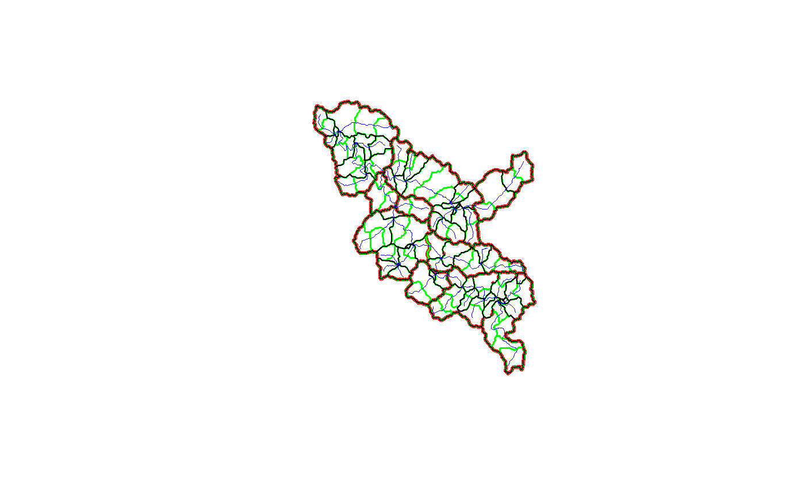
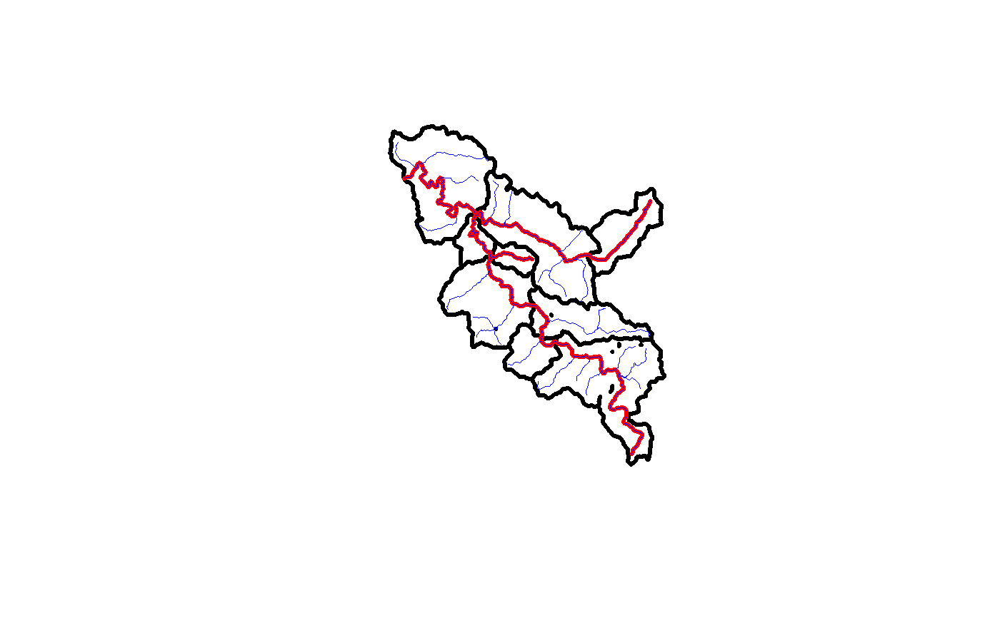

Aggregates catchments according to a set of outlet catchments.
aggregate_catchments( flowpath, divide, outlets, zero_order = NULL, coastal_cats = NULL, da_thresh = NA, only_larger = FALSE, post_mortem_file = NA )
| flowpath | sf data.frame Flowpaths as generated by `refactor_nhdplus` |
|---|---|
| divide | sf data.frame Reconciled catchment divides as generated by `reconcile_catchment_divides` |
| outlets | data.frame with "ID" and "type" columns. "ID" must be identifiers from fowpath and divide data.frames. "type" should be "outlet", or "terminal". "outlet" will include the specified ID. "terminal" will be treated as a terminal node with nothing downstream. |
| zero_order | list of vectors containing IDs to be aggregated into 0-order catchments. |
| coastal_cats | sf data.frame with coastal catchments to be used with zero order. |
| da_thresh | numeric Defaults to NA. A threshold total drainage area in the units of the TotDASqKM field of the flowpath data.frame. When automatically adding confluences to make the network valid, tributary catchments under this threshold will be lumped with the larger tributaries rather than being added to the set of output catchments. |
| only_larger | boolean Defaults to TRUE. If TRUE when adding confluences to make the network valid, only tributaries larger than the one with an upstream outlet will be added. e.g. if a tributary is required in the model this will add main stems that the tributary contributes to. Note that the NHDPlus treats divergences as part of the main stem, so the da_thresh may still be needed to eliminate small tributary catchments introduced by divergences near confluences. |
| post_mortem_file | rda file to dump environment to in case of error |
This function operates on the catchment network as a node-edge graph. The outlet types are required to ensure that graph searches start from the appropriate nodes and includes the appropriate catchments. Outlets such as gages should be treated as "outlet" outlets. While it may be possible for the algorithm to determine terminal outlets, at this time, it is required that they be specified explicitely as "terminal" outlet types.
The function checks supplied outlets to make sure they connect downstream. Checks verify that the outlet of the levelpath (main stem of a total catchment) of each supplied outlet is in the supplied outlet set. If the outlet of a levelpath is not in the supplied set, it is added along with other catchments that contribute to the same receiving catchment. These checks ensure that all output catchments have one and only one input and output nexus and that all catchments are well-connected.
#>#> #> #> #> #> #> #> #> #> #>outlets <- data.frame(ID = c(31, 3, 5, 1, 45, 92), type = c("outlet", "outlet", "outlet", "terminal", "outlet", "outlet"), stringsAsFactors = FALSE) aggregated <- aggregate_catchments(walker_fline_rec, walker_catchment_rec, outlets)#>